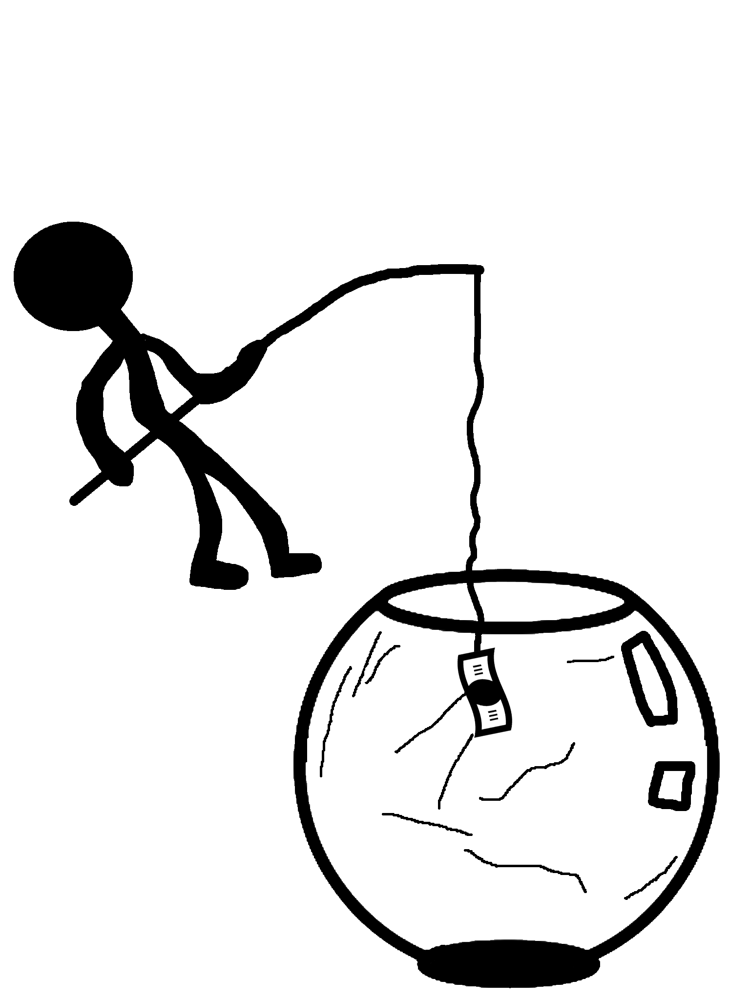

Frederik Munck, Frederik Panduro og Mads Gräs kender alle til fristelsen ved at "jagte mønten".
Alle er de 18 år, går på HHX på Nyborg Gymnasium og bruger deres SU og pengene fra studiejobbet, når de 2-4 gange om ugen smider penge på virtuelle kasinoer.

På Nyborg Gymnasium er pengespil på nettet blevet hverdag for 18-årige Mads Gräs, Frederik Panduro og Frederik Munck.
Flere gange ugentligt satser de penge på online kasinoer. Tendensen er dybt bekymrende, mener centerleder ved Center for Ludomani.

- Det er et kæmpe samfundsproblem.
Sådan opsummerer Mads Gräs det pengespil, der er dagligdag på ungdomsuddannelserne. Ved samme kantinebord sidder Frederik Panduro og Frederik Munck. De nikker.
De er alle 18 år og går i samme klasse, 2.x, på Nyborg Gymnasium. To til fire gange om ugen spiller de om penge - både odds på fodboldkampe og online kasinoer, hvor digitale frugter spinner rundt og rundt med håbet om gevinst.

De er handelsskoleelever og ikke alene med deres hobby.
Tallene afslører også, at blandt børn og unge mellem 12-17 år er tallet 24.500, hvoraf cirka 2.600 har alvorlige pengespilsproblemer.
Frederik Munck har altid været fodboldinteresseret og spillede første gang om penge i 7. klasse. Sammen med sin far oddsede han fra tid til anden på kampene. Senere fik han sin egen konto styret af forældrene, og i 9. klasse fik han lov til selv at sætte penge ind.

- Der begyndte det så at tage lidt mere overhånd, indrømmer han.
Mads Gräs byder ind. Det er samme historie. De var klassekammerater og i forlængelse af det spilkammerater. Frederik Panduro begyndte i 1.g inspireret af sine klassekammerater.

- Vi hygger os jo med det. Det er det, der er så farligt. Keder vi os en aften, kan vi altid hoppe ind og smide 100 kroner, fortæller Frederik Panduro, og Mads Gräs tilføjer:

- Selv hvis du taber pengene hurtigt, tænker du, det kan fandeme ikke passe, og så lægger du ind igen.

Det handler om dopaminen, chancen for at ramme lottoen, forklarer drengene. Og selvom deres forældre ikke er meget for, at de spiller, gør de det alligevel, siger Panduro:

- Det er jo en stor del af hverdagen – især på ungdomsuddannelserne.


Det bekymrer centerleder Henrik Brandt fra Center for Ludomani, hvor antallet af klienter i alderen 12-17 år er steget fra 9 til 24 procent i perioden 2009-2021.
Han mener, at en del forklaringen skal findes i 2012, hvor man fjernede den regel, der forbød reklamer for pengespil.
Derefter udbrød der, som Henrik Brandt beskriver det, en markedsføringskrig, hvor ansvarligheden var den første til at falde.
- Der er ikke nogle virksomheder i landet, der reklamerer mere for deres produkt end spiludbyderne. De er suverænt danmarksmestre.
- Synlighed og tilgængelighed er vigtige ting. Det er hele normaliseringen af spil som harmløs underholdning, som spilindustrien er lykkedes med rigtig flot. Man har jo sit kasino i baglommen og kan spille 24-7. Vi har slet ikke forstået alvoren i det her, advarer centerlederen.
| Nr. | Kampe | Ja | Nej | |
|---|---|---|---|---|
| 2 | FCBiksekage vs igtja |  |
| Nr. | Kampe | Ja | Nej | 3 | AaB vs HB Køge | |
|---|

Siderne hedder "Mr. Green", "Maria Casino" og "Leo Vegas". Alle har det tilfælles, at de tilbyder en velkomstbonus på 100 procent oven i første indbetaling og 1000 kroner i kontanter.

- Alle, vi kender, bruger "Mr. Green", og jeg tror, vi blev fanget af velkomstbonussen, indrømmer Frederik Munck.

Læser man det med småt, står der, at man hos "Mr. Green" skal omsætte sine bonuspenge 10 gange på deres automater, før eventuelle gevinster kan udbetales. Først skal spilleren dog opbruge sin egen indbetaling.

De tre HHX'ere er enige: Man kan hurtigt tabe sine penge. Til gengæld kan man få bonusser på forskellige måder, der øger udbyttet. En tokroners-bonus gør for eksempel 100 kroner til 200, og man kan få op til 5000 gange sine to kroner igen.


- Man kan spinne sig til bonusser, men du kan også vælge at købe dem, så er man fri for at spinne. Det er derfor, man kan miste sine penge hurtigt, forklarer Frederik Panduro.
Det spiller ind i drengenes økonomi. De får 600-1000 kroner i SU. Ved siden af det har Frederik Panduro og Gräs et studiejob på en café. Normalt lægger de 100 kroner hver i en pulje, de kan spille for.

En weekend kunne Munck høste en gevinst på 4000 kroner, men det var også første gang det skete. Det højeste, de har trukket ud, er 2000 til 4000 kroner. Til gengæld vurderer de, at de kun udbetaler en femtedel af deres gevinster. Huset vinder rimelig ofte.

- Når man vinder, bliver man mere tilbøjelig til at spille. Man bliver ligesom bare ved, for man tænker, man kan vinde 2000 igen. Men det kan man altså ikke, forklarer Frederik Panduro.

Det er svært at gennemskue, hvor meget de har tabt. Man vinder lidt, trækker dem ud, sætter dem ind igen.

- Alt i alt er vi alle sammen i minus, konkluderer Mads Gräs, hvilket får de andre til at grine.
Det samme gør en gruppe medstuderende, der overhører samtalen.

- Pensionerede gamblere, siger en, da de hører Frederik, Frederik og Mads’ fortælling.
Egentlig er de stoppet.

Sandsynligheden for at udvikle et reelt spilleproblem stiger, jo tidligere man begynder at spille om penge, understreger Henrik Brandt.

Det skyldes, at impulskontrollen hos unge ikke er færdigudviklet.

- De ved godt, at spilindustrien har fat i den lange ende. Alligevel har de en enorm tro på, at de kan vinde nogle af de tabte penge tilbage.

- Rigtig mange har prøvet at vinde en stor gevinst. En stor gevinst kan for en 14-årig være 1000 kroner. Det sætter gang i et eller andet, forklarer han.

Hos Center for Ludomani ser man ofte, at der går lang tid, fra man udvikler ludomani, til man søger behandling. Tit bliver det forklaret med, at man sagtens kan styre det, og da det foregår på en skærm, kan det være sværere at opdage end for eksempel et alkohol- eller hashmisbrug.

Tegnene er mere skjulte: Tit starter det med, at man er sportsinteresseret og snakker om spil. Langsomt skifter den unge adfærd, trækker sig og har svært ved at følge med i skolen. Ofte vil man også se, at pengene ikke slår til, fordi de er spillet op, og at de måske er begyndt at tage fra mor og far, forklarer centerlederen.

På Nyborg Gymnasium er de tre handelsskoleelever blevet enige om at kvitte spillet. De er klar over, at de ikke skal spille for store beløb. De ved, det er dumt at spille.

- Men så hørte Mads og jeg, at en af vores venner havde vundet 2000 kroner, og straks tænkte vi, at vi skal ind og "jagte mønten", indrømmer Frederik Munck.

Dagen forinden meldte en fra parallelklassen sig ind i ROFUS og udelukkede sig derved frivilligt fra spilsider.
Spillemyndighedens Register Over Frivilligt Udelukkede Spillere (ROFUS) er et online-tilbud, der blokerer for al tilgang til spillehjemmesider.
Det fungerer ved, at du indtaster dit cpr-nummer og MitID, hvorefter du vælger, hvor lang tid du vil være udelukket fra at kunne spille.
Det kan være fra 14 dage til for evigt. Derefter kan du ikke tilgå diverse spilhjemmesider eller få reklamer for spil. Udelukkelsen kan ikke ophæves.
Ifølge Spillemyndigheden havde 30.451 danskere pr. januar 2022 udelukket sig selv fra pengespil. Opgørelsen viser også, at yngre mænd er stærkt overrepræsenterede i registret.
Der er de ikke selv endnu, mener de.
De tror på, at de sagtens kan stoppe, hvis bare de tager sig sammen. Mads Gräs lukkede for eksempel begge sine kontoer, inden han alligevel "kom til at spille med sine venner".

Alle føler de, at de har kontrol. Det ændrer dog ikke det faktum, at siger man sig fri fra "at jagte mønten”, siger man samtidig nej til fællesskabet. Og det gratis spil? Det giver ikke det samme kick.
- Hvor tit fortæller I egentlig, når I taber?
- Mine forældre hører det sjældent. Det er tit, de hører, når jeg vinder, erkender Frederik Munck.
- Ifølge Center for Ludomani er det almindeligt blandt spilafhængige at skjule tab og prale af sejre. Gør det dig nervøs?
- Ja, det gør mig lidt nervøs. Men ikke så voldsomt. Jeg har styr på det.
Created by: Albert A. Beck, Joakim O.K. Mazanti, Jonas F. Petersen & Stine Galsgaard
Written by: Emil Østedgaard